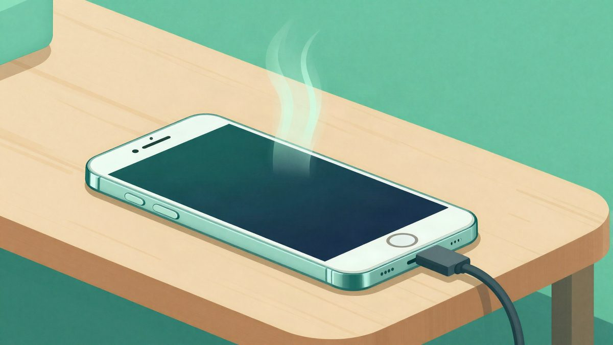

Galaxy S9+ s razbijenim ekranom postao je LTE router na Debianu, radi više od pet dana bez restarta

Autor je razbijeni Samsung Galaxy S9+ iz 2018. za jedan dan, uz pomoć AI agenta, pretvorio u LTE router s Debianom 13 na Samsungovu kernelu Linux 4.9. Prema autoru, telefon radi više od pet dana bez restarta i po kući dijeli internet putem mobilne mreže. Provjereno je samo na modelu SM-G965F/DS s Exynosom 9810.
Samsung Galaxy S9+ iz 2018. s razbijenim ekranom, istrgnutom tipkom za glasnoću i tipkom za uključivanje zalijepljenom ljepljivom trakom sada radi kao LTE router. Autor ga je za jedan dan, uz pomoć AI agenta, prebacio na Debian 13. Android se više ne pokreće, a mobilnu mrežu podiže originalni Samsungov modem. Prema autoru, telefon radi bez restarta više od pet dana i non-stop dijeli internet po kući.
Pristupna točka "S9+" radi na 5 GHz, a telefon je istovremeno spojen na kućni Wi-Fi. Na ekranu se prikazuju baterija, operater i jačina signala, promet, broj spojenih uređaja, vrijeme rada i temperatura.
Zašto S9+
Galaxy S9+ je izašao u ožujku 2018., a u SAD-u je tada koštao 840 dolara. Po hardveru i dalje nadmašuje mnoge jeftine LTE routere. Modem podržava Cat.18 do 1,2 Gbit/s, agregaciju šest nositelja i antene 4×4, a telefon ima osam jezgri do 2,7 GHz i 6 GB memorije. Keenetic Runner 4G, na primjer, ima Cat.4 do 150 Mbit/s, procesor od 575 MHz i 128 MB memorije.
Autor ističe i mane. Brojke za LTE prikazuju samo maksimum modema, a stvarna brzina ovisi o mreži i signalu. Brzinu usmjeravanja nije mjerio. Telefon nema priključak za vanjsku antenu ni Ethernet port, pa je u slabom signalu bolji router s vanjskom antenom. U jednostavnom mjerenju datoteka od 10 MB skinula se na samom telefonu preko mobilnog sučelja za 12,3 sekunde, oko 6,5 Mbit/s, uz RSRP od −100 dBm.
Kernel i zaštite
Kernel je Samsungov izvorni Linux 4.9 iz zadnjeg firmwarea, preveden starim GCC-om 4.9. Autor je isključio nekoliko postavki koje Debian ne očekuje, među njima ANDROID_PARANOID_NETWORK. Pri pokretanju su se dvaput dogodile kernel panike zbog Samsungovih zaštita DEFEX i one koja dopušta pokretanje programa samo s Androidovih particija. Obje su isključene.
Treći problem bila je greška u starom ext4 kodu. Nakon proširenja datotečnog sustava na cijelu particiju od oko 232 GB kernel ga je proglasio oštećenim (group descriptors corrupted). Pomogla je izmjena jedne linije u funkciji ext4_check_descriptors, preuzeta iz novijeg Linuxa. Zauzvrat kernel više neće dobivati updateove, a dio zaštite je isključen. Autor kaže da je to za kućni uređaj prihvatljivo.
Što je ostalo od Androida
Debian radi izravno na Linux kernelu. Od Androida je ostalo jedanaest tvorničkih procesa u zasebnom direktoriju, jer se bez njih modem ne registrira na mreži. Modemski stack zato nije postao slobodan. To su zatvoreni programi koji se samo pokreću, a zatvoreni su i firmware modema i Wi-Fi chipa.
Sve je provjereno samo na modelu SM-G965F/DS s Exynosom 9810. Verzije sa Snapdragonom imaju drugi modem i drugi kernel. Bootloader mora biti otključan, što je na ovom modelu dovoljno učiniti opcijom OEM unlocking u postavkama za razvojnike.
Watchdog veze zabilježio je 32 ponovna spajanja i 2 potpuna restarta modema. Od toga je 31 spajanje i oba restarta bilo 21. studenoga, tijekom debugiranja, a nakon 22. studenoga watchdog nije morao intervenirati.
Izvor: Habr vijesti
Povezani članci
- Tokio: u Akihabari je već treći dan nakon postavljanja pametnih kanti netko ostavio nedopušteni otpad16. studenoga 2026.
 Čovjek iz Chengdua s 4.000 juana (oko 500 eura) napravio je AI seriju od 96 epizoda i skupio 600 milijuna pregleda13. studenoga 2026.
Čovjek iz Chengdua s 4.000 juana (oko 500 eura) napravio je AI seriju od 96 epizoda i skupio 600 milijuna pregleda13. studenoga 2026.- COO: besplatna igra u pregledniku u kojoj ste robotski golub u 3D Torontu od 630 km²10. studenoga 2026.